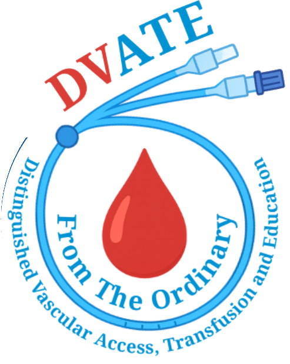

Vascular access, transfusion and infusion care at the bedside.
DVATE nurses come to your facility to place PICC lines, midlines and ultrasound-guided IVs, run non-emergent blood transfusions and deliver infusion therapy. Your residents stay in their own beds, and your staff stay on the floor.
No transport.No disruption.No exposure.

One team for the line, the blood and the infusion.
Most facilities call one vendor for a PICC, send residents out for a transfusion and juggle a third for IV therapy. DVATE handles all three at the bedside, with the same nurses and the same standard every time.
Vascular access
Placement, care and removal of the devices your residents depend on.
- Ultrasound-guided PICC lines
- Midline catheters
- Ultrasound-guided peripheral IVs
- Port access, de-access and maintenance
- De-clotting, dressing changes and removals
- Blood draws and access consultations
Transfusion
Non-emergent blood and blood component transfusions performed at the bedside by trained infusion nurses.
- Packed red blood cells and other components, per physician order
- Monitoring before, during and after the transfusion
- No ambulance trip, no hospital day, no hospital exposure
Advanced infusion therapies
Delivered in coordination with your care team to support recovery and chronic disease management.
- IV antibiotics and antivirals
- Iron infusions
- IVIG and SCIG therapy
- Hydration and electrolyte support
- Anti-inflammatory and steroid infusions
- Wellness IV therapy
DVATE from the ordinary.
Our name is a promise to deviate from the way bedside care usually goes. Here is what a DVATE visit takes off your facility's plate.
About DVATE- Transport costsProcedures happen in your building, so there is no ambulance or wheelchair van to book and pay for.
- Hospital infectionsResidents who stay put are not exposed to emergency rooms and hospital floors.
- Patient anxietyCare happens in the comfort of the resident's own bed, with familiar staff nearby.
- Vascular complicationsWe use only high-quality catheters and place them under ultrasound guidance.
- The high cost of transfusionsA bedside transfusion at your facility costs less than the same transfusion in a hospital.
- CMS penaltiesFewer hospital admissions and readmissions protect your quality scores and reimbursement.
How a DVATE visit works
From the first call to the hand-off back to your nurses, you deal with one team.
DVATE provides scheduled, non-emergent care. For a medical emergency, call 911.
Send the order
Call, email or use our request form. Share the physician order and what the resident needs.
We confirm and schedule
Our clinical team reviews the order, confirms the right device or therapy and sets a visit time with your staff.
A DVATE nurse comes to the bedside
The nurse arrives with ultrasound and supplies and performs the procedure in the resident's room.
Hand-off to your team
We document the procedure for your chart and walk your nurses through care and maintenance for the device or therapy.
Education that stays with your staff.
DVATE trains the nurses who care for lines and infusions every day. Choose online learning for your whole team, on-site training at your facility, or both.
Online through IV Mastery
A yearly subscription for all of your staff: 17 modules with video training, competency checklists and clinical posters, plus 43 free CEUs.
On-site education
Classroom instruction and hands-on practice at your facility, tailored to your operations.
Built for the places residents live and recover.
Skilled nursing and long-term care
PICC and midline placement, transfusions and IV therapy without sending residents out.
Assisted living and memory care
Ultrasound-guided IVs, hydration and blood draws in a calm, familiar room.
Long-term acute care and rehab
Backup for difficult access and device complications when your team needs it.
Home health, hospice and physician groups
A bedside partner for the orders your patients need between office and hospital.
Every patient receives the right access, the right way, the first time.
The DVATE mission